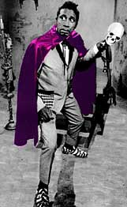

Причудливы ухмылки судьбы. Вскоре Хокинс уже выступал с сольными концертами в театре "Аполло". Он напяливал на себя шляпы убойных расцветок, и тюрбаны - тоже. Он выходил на сцену в костюмах немыслимых расцветок и покроя, хотя леопардовый узор оставался его любимым прикидом. Фейерверки, взрывпакеты и прочая пиротехника регулярно опаляла его усики - он любил помечтать в эпицентре взрыва. Ну и, конечно, гробы, змеи, крокодилы, съежившиеся головы (это из Вуду) и главный любимец, ставший концертным спутником навсегда: череп по имени Генри, с сигаретой в бузгубом рте.  Хокинс, безусловно, был талантлив. Но свои таланты он сам схоронил под горами мишуры, скрыл настоящие страхи за масками притворного ужаса и вытащил жупелы, чтоб просто было, чем помахать... Своим талантом и страстностью он прорубил еще одну лазейку в границах приличия на эстраде. Может быть, боролся он за свободу художника, но дышать-то легче никому не стало. Через проложенный им ход хлынул поток "вопящих" эпигонов, вываливая на нас, мирных слушателей, такой вал мишуры, масок и жупелов, за которым наличие или отсутствие у них таланта было уж никак не разглядеть. Вот интересно, если бы он знал, чем все кончится, пошел бы он напролом?Забавно, что, словно оправдываясь, мистер Хокинс в воспоминаниях пытается приписать свои новшества кому-то другому. Зачем он так подчеркивает, что устроить в студии гулялово с бухлом и записать песню в максимально "странной" манере было решением продюсера? Ведь стоит только послушать его предыдущие записи, как становится ясно, что Хокинс двигался именно в этом направлении - экзальтированного вокала без оглядки на благопристойность. Каннибалистическая гулкая отрыжка и злодейское гоготанье сумасшедшего на крыше девичьего приюта - давно стали частью его творческого метода. Для "…Заклятья" оставалось только лишь чуть-чуть понизить сдерживающую планку. Кстати, в очень раннем интервью Хокинс говорил, что, записывая пластинку, думай о том, чтобы она с первых же тактов привлекла внимание слушателя, удивив и поразив чем-то необычным. Но словно во всем опять виноваты белые люди, и гроб свой - простите - идею гроба Хокинс отдает известному ди-джею. Манхэттен Парамаунт, Рождественской шоу, 1957 год. ХОКИНС: Алан Фрид зашел ко мне в костюмерную и сказал: "Джей, я хочу, чтобы ты публику сразил как громом! Я хочу, чтобы ты пел из гроба". "Я? - переспросил я, - нет, только не я". Ну, тогда Фрид выложил стольник на стол. Я сказал "нет". Он кладет еще сто. Я почувствовал, что мое сопротивление слабеет. Когда он положил еще сто, я сказал: "Ладно, показывай, где гроб?" Печальные товарищи выносили гроб на темную сцену. Музыка смолкала. И, дождавшись тишины, Хокинс выпрыгивал из гроба с адским рыком. ХОКИНС: Половину зала я терял на этом. Публика вскакивала с кресел и бросалась через проходы к выходу. А я еще нанимал мальчишек, которые сверху с балкона раскидывали мелко нарезанную резиновую ленту и шептали: "Черви… Черви… Черви…" Чувствуя эти легкие извивающиеся прикосновения, люди начинали вопить и трясти руками как ненормальные". "Кто на двух ногах идет, а на вид - полный козел? Это псих "Вопящий" Джей, в любимом желтом пиджаке!" - яркими мазкам написан автопортрет в песне "Yellow Coat", записанной для первого альбома в 1957 году: "At Home With Screamin' Jay Hawkins" - "С Вопящим Джеем хорошо как дома". Альбом 1957 года призван был подтвердить успех скандального сингла. И Джей - оттянулся. В собственных песнях он задал перцу всем: женщинам (этим - больше всех), мужчинам, деньгам, козлам и самому себе. Из детских воспоминаний он достал милые предыдущего поколения песенки, слушая которые, может быть, он впервые пробовал голос и примерял образ эстрадного певца. И сделал с ними то, что якобы основатель парадокс-юмора давным-давно сделал с черепахой. Была очаровательно-умилительная песенка "You Made Me Love You", исполнялась в ресторанах перед коктейлем: "Ты заставила меня полюбить тебя, я же не хотел! Ты заставила меня сделать это. Ты сделала меня счастливым ненадолго, но иногда теперь мне так плохо…" Джей сказал, что споет ее от лица чувака, которого соблазнил гомик, благо английские глаголы не указывают на род соблазнительника. Песня стала фантасмагорически смешна! Голос Хокинса аж передергивает от возмущения, брезгливости и стопорного недоумения, как это такое могло с ним стрястись… (На театре Виктюка дают с голубым аншлагом копеешное представление под названием "Рогатка": там один инвалид соблазнил соседа-юнца, а юнец оказался недостаточно продвинут и раскаялся в содеянном… Драма - ужасная. Весь спектакль идет под песню группы "Королева", не имеющую отношения к сюжету, но пущенную с наипафоснейшей громкостью. Эх, надо бы - под Хокинсовы вопли: "Как ты заставил меня захотеть тебя?! - Брррррррррррр!" Виктюк ведь тоже не бездарен, но по ходу, проторенному им, в театр полезет страшно представить, что.) По-разному досталось многим безобидным стандартам, но менее прочих - песне Кола Портера (вдохните) "Я люблю Париж" (выдохните). Разящий меч сарказма Хокинс направил на народы и города, с которыми сравнивает Париж, но имя именно этого города пропел с любовью. Никто и ничто не сравниться с Парижем - Хокинс выбрал себе место успокоения. Но остальные переделки!.. Как Хокинс пояснил, это были любимые песни его мама, спетые так, чтобы мама больше никогда не захотела их слушать. |